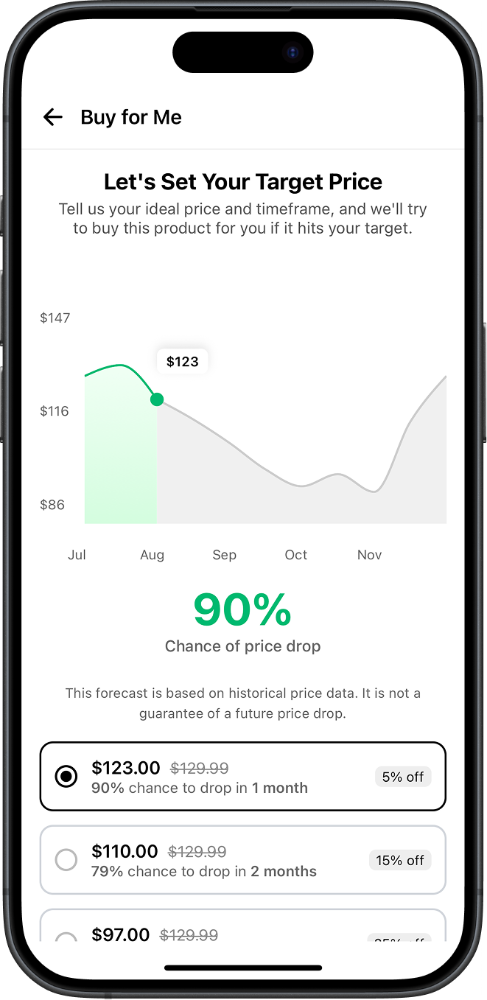

Agentic AI for the Consumer
Our story begins with a challenge from Consumer Reports, an organization with a ninety-year history of fighting for consumers. They asked our team to find the most valuable problem agentic AI could solve within their ecosystem.
Our Journey Started on the Ground
To discover the right answer, we left the office. We conducted 12 preliminary in-store intercept interviews at retailers like Best Buy and Home Depot and 15 interviews with consumers from our networks.

Finding 1
The Burden of Ownership
When it comes to product upkeep, consumers are left to manage the complexity alone, making ownership feel like a burden rather than a benefit.
“We are on our 4th washing machine in around 10 years.”
“It's planned obsolescence.”
“There’s just so much paperwork... I’ll probably just throw it in the garbage.”
Finding 2
Decision-Making is Undersupported
Large purchases demand emotionally charged trade-offs, yet consumers often lack credible, tailored guidance.
“My wife really wanted to make it a home... we're going to make it our own.”
“I’m tired of being asked "What do you think?" and facing indecision from customers.”
“I don’t want to recommend specific products because I don’t want to be liable.”
Finding 3
Information is Everywhere, But Trust is Scarce
Consumers are inundated with sources but struggle to find information they can truly trust.
“I put a little poll on Facebook... most people weren't happy with GE.”
“Online reviews are frustrating because they are polarizing.”
“I went to YouTube, Reddit, Best Buy, and Amazon to find out more.”
Finding 4
Convenience Wins, But Only If It Feels Human
People crave seamless experiences, but only when grounded in a layer of human reassurance and trust.
“We... prefer to go to the local, well-known appliance store because there is a credibility factor.”
“They rely on sales associates to facilitate the final purchase via text.”
“If we can use local we like to support small local businesses.”
Finding 5
Digital Tools Fail to Meet Emotional Needs
Current tools lack the emotional intelligence and trust to fully support complex, high-stakes purchases.
“When frustrated looking online they just end up saying ‘let’s just go to the store.’”
“I won’t purchase a sofa online without seeing it in person.”
“Develop a relationship with your local bike shop... don’t get it online.”
Finding 6
AI is Underutilized in Personal Life
AI is seen as productive for work, but lacks the trust and intuitive integration for high-friction personal decisions.
“I don’t see any reason to use AI beyond work.”
“I think it will help with automation... haven’t really tried to make it useful.”
“When all this stuff is happening... I kind of want to stay clueless to it all.”
Transition
This will be a transition point talking about direction.
93%
Are waiting to buy something specific
40
Total Responses
Are People Willing to Wait?
To validate our qualitative findings, we surveyed a wider audience ahead of Amazon's Prime Day. The results were overwhelming: the vast majority of consumers are actively considering a purchase, just waiting for the right moment to act.
93%
Are waiting to buy something specific
40
Total Responses
What's On The Wishlist?
Air Fryer
The most frequently named "wait to buy" item across all demographics.
Coffee Maker
A close second, with many users looking to upgrade an existing machine.
And More...
Juicers, Toasters, Rice Cookers, TVs, Laptops, and Office Furniture also topped the list.
The Rationale: Why People Wait
To Find a Good Deal
The primary driver is financial. Shoppers are actively looking for sales to justify the purchase.
To Upgrade an Existing Item
Many have a product that works, but isn't working well, creating a slow-burning need.
The Want vs. Need Spectrum
We discovered a fundamental split in how people shop. A need is urgent, your microwave just broke. A want can wait, you’re considering an air fryer but you’ll buy when the timing and price are right. That “waiting to buy” space, where 93% of our participants lived, represents a massive, unmet need.

For these shoppers one question surfaced again and again:
“What’s the lowest price this item will drop to, and when will that be?”
They ask this because they need to decide whether waiting is worth it, but the manual process of finding an answer is frustrating, inconsistent, and easy to forget.
“ I continue looking and looking and looking, and I usually forget to keep looking. And then one day I remember, and it’s expensive again.
Testing Our Agent with Real People
Our early findings pointed to a powerful idea: an AI agent that buys things for you. But would anyone trust it? To find out, we ran a "Wizard of Oz" test. In 45-minute sessions, 11 participants interacted via text with what they thought was an AI. In reality, it was one of us, acting as the agent to discover the moments that build—or break—trust.
Insight 1: Offload the Mental Load
People don't just want to save money; they want to save the mental energy it takes to track prices.
"I want to get the best deal... but I often forget to check and end up missing out on potential discounts. I wish I had someone to remember for me, check more frequently, and snag the deal... so I don’t miss out."
Design Implications:
- Position the agent as something that "remembers to do what you're already meaning to do, and does it better."
- Proactively communicate to remind the user of the value it's providing ("I'm still watching that air fryer for you!").
- Clarify use cases for both "nice-to-have" and "need-to-upgrade" purchases.
Insight 2: Reassure Me With Data
Setting a "good" price is a huge point of anxiety. Users are afraid of setting the bar too high and missing out, or too low and losing savings.
Design Implications:
- Provide a few data-backed recommendations for price and timeline that users can customize.
- Visualize historical price data to build trust and inform manual settings.
- Notify users if a price target becomes unrealistic, prompting them to re-evaluate their criteria.
"I want the agent to get the best deal it can, but I’m not sure how to set up my criteria to do that... I wish the agent would provide me with a data-backed recommendation... and keep me updated if its expectations change so that I feel reassured."
Insight 3: Keep Me In Control
The idea of an automated purchase is scary. Users need to feel like they hold the keys, even when they've delegated the task.
"I want to feel in control of my finances, but I worry about forgetting that I’ve authorized a future purchase... I want transparency in prices, reminders that the agent is watching for me, the option to confirm before purchase, and the option to cancel."
Design Implications:
- Default to requiring user confirmation before any purchase, with a clear opt-in for full automation.
- Make cancellation frictionless (e.g., text "CANCEL").
- Always show the "all-in" price, including taxes and shipping, before and after the purchase.
Consumers Need Support, but they are Skeptical of AI.
Our findings revealed a core tension: consumers crave effortless solutions but are deeply skeptical of ceding control. This meant our agent couldn't just be smart; it had to be a trusted partner.
Be an Effortless Partner
The agent must simplify complexity, from decision-making to long-term ownership, without adding new burdens.
Build on Trust
Every recommendation and action must be transparent, credible, and grounded in the user's best interest, not a black box.
Empower, Don't Replace
The agent must respect the user's emotional needs and final say, providing reassurance and control at every step.
The Mission Became Clear
How might we leverage Consumer Reports’ trusted brand to offload the mental effort of making these decisions and taking action?
Our Answer: Best Time to Buy 2.0
A proactive buying agent that monitors products, notifies you at the perfect moment, and can even purchase on your behalf.
But there was a catch.
An AI that can spend your money? That's a huge leap of faith.
Before our agent could be a partner, it first had to build trust.
Principle 1: Financial Control
Users want to stay in charge. We provide clear opt-ins for automation, full price transparency with historical data, and in-the-loop notifications so there are no surprises.

Principle 2: Reassurance
People need confidence they’re getting the best deal. We provide smart criteria recommendations based on data and send expectation updates if market conditions change.

"I want messages and info saying, 'hey it's not dropping as we expect in the timeline I set.'"
The Payoff: A True Partnership
Members gain time, money, and peace of mind. Consumer Reports deepens member relationships and projects additional affiliate revenue from capturing these "willing-to-wait" purchases.
Projected Affiliate Revenue Increase
+$0.0M
annually from a 5-10% lift in usage.
The Path Forward
This is only the beginning. We envision a phased rollout that expands trust and capability over time.
Start with small appliances.
This is an area with great data and lower stakes, perfect for building user trust.
Expand to larger purchases.
As trust grows, move to items like washing machines and TVs, where savings are even more significant.
Evolve into full-journey support.
The ultimate goal is an agent that helps with proactive personalization, warranties, and even returns.
Thank you for following our journey.
Together we’re building a smarter, fairer marketplace for everyone.
© Made by Consumer Reports Capstone Team 2025
A Capstone Project for the MHCI Program